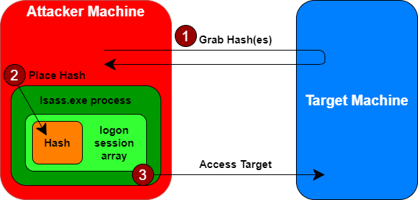

Pass the Hashes
With pass-the-hash technique attack, the attacker can gain access to the password hashes and use them directly for authentication. This kind of attack, is most often applied against Windows targets, although this kind of flaw is also found in some other systems, such as vulnerable web applications
The attacker may grab the password hashes by dumping them from a Windows SAM database (a process that requires admin privileges) or by dumping a database from a domain controller.
How work the Pass the Hash technique
1. The attacker steals password hashes from the target environment
2. The attacker instead of cracking those passwords, strips off the hash for a given user (likely one in the administrator's group) and carefully places it in the memory of the Local Security Authority Subsystem Service (LSASS) of an attacker-controlled machine
3. The attacker can simply use various Windows file and print sharing tools to access the target system, with Windows automatically presenting the user's credentials to the target, thereby bypassing any need for providing an actual password.
Why use Pass the Hash technique
This type of attack require that the attacker have admin privileges to get access to the hashes in the first place(Step 1).
But if the attacker already has admin privileges, why bother using pass-the-hash to obtain, well, the same admin privileges?Because with pass-the-hash have flexible access to the machine, without requiring any time-consuming password cracking.
Bibliography:
• Pass-the-Hash in Windows 10:
https://www.sans.org/white-papers/33283/• Pass-the-hash attacks: Tools and Mitigation:
https://www.sans.org/white-papers/39170/{kind=link}